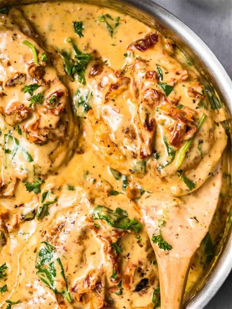

My Favorite Recipe
Instapot Tuscan Chicken
Made from my wife
I chose my wifes recipe for Tuscan chicken
Ingredients
- Chicken Breast
- 3tbps of butter
- 1tbps of olive oil
- 1 cup of chicken broth
- 1 cup of sun dried tomatoes
- 2 cups of heavy whipping cream
- 1 cup of parmesan cheese
- 3 cups of baby spinach
- 1 box of rotini noodles
- Red chili flakes
- Salt and pepper
- Italian herb sesaoning
- Minced garlic
Directions
- Set the instapot to saute to melt butter and oil
- Cut and season chicken breast
- Sear chicken in instapot for 2-3 minutes on both sides; set aside
- Put garlic in leftover butter and oil until fragrant
- Pour in chicken broth and let heat
- Put chicken back into the instapot and pressure cook for 9min
- Once done take chicken out, pour in heavy whipping cream and parmesan cheese and saute
- Add sun dried tomatoes and baby spinach turn the instapot off
- Shred chicken and add it back to the instapot after baby spinach wilts
- Cook noodles and add to pot then mix

I chose this recipe because it is such a comfort meal but so good the sauce itself could go on almost any
other dish and make it instantly better!
Great recipes for everyone to try